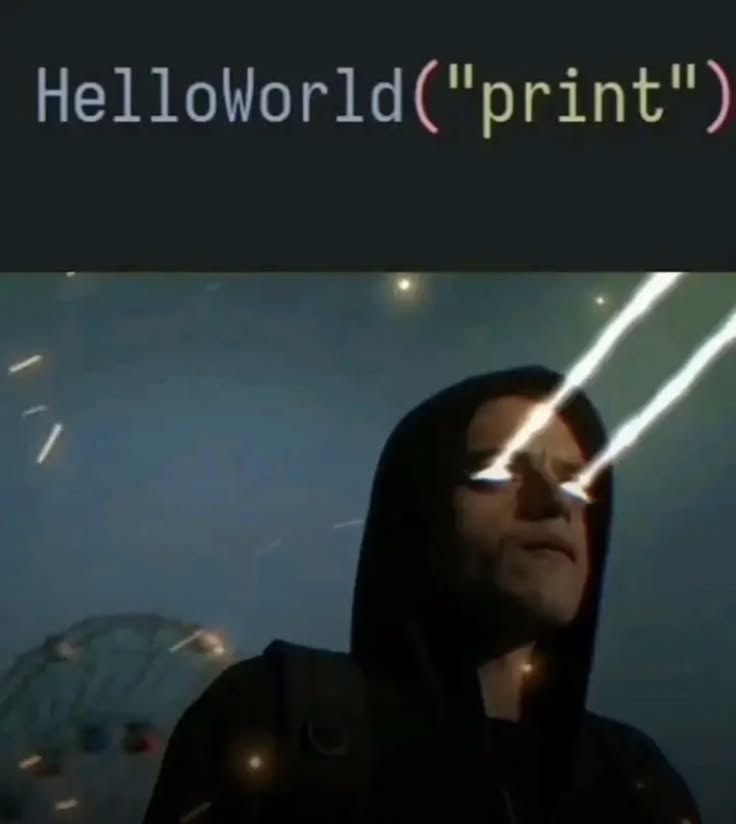

Radics Bence
szoftverfejlesztő tanuló · gamer · szerencsejátékfüggő
szoftverfejlesztő tanuló · gamer · szerencsejátékfüggő
Radics Bence Zoltán vagyok, 17 éves és a Kiskunfélegyházi Szent Benedek PG Két Tanítási Nyelvű Technikum és Kollégiumba végzem szoftverfejlesztő tanulmányaimat. 8.-os sotály óta érdekel a programozás ezért is indultam el ebbe az iskolába.
Sok videó játékot is játszok és ez is egy ér volt ami miatt ezt az utat választottam.
Ez az oldal az első „névjegyem”, tiszta HTML-ből és CSS-ből.
Amiket eddig megtanultam, és amiket most tanulok:
A kedvenc tanulóoldalam a MDN Web Docs

Néha le ülök egy-két cheatet cs2be és weboldalakat csinálok ahol árulom őket.

Minden nap végén felugrunk a haverokkal grindolni egy kis rankedet,
Hatalmas büszkeségem a ginisz rekordom amivel fény sebességet megszégyenítő gyorsasággal vesztettem el a fizetésem.